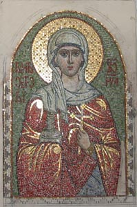

в процессе работы
Мозаика "Св. Анастасия Узорешительница" на боковой фасад храма св. Анастасии в Теплом Стане, Москва, 2005
Размер - 80:120
Техника - обратный набор
Материал - смальта, золотая смальта, мрамор, гранит, перламутр, галька.
Исполнитель
в составе бригады (авторы - Кеслер М., Богданов М.)
Размер - 80:120
Техника - обратный набор
Материал - смальта, золотая смальта, мрамор, гранит, перламутр, галька.
Исполнитель
в составе бригады (авторы - Кеслер М., Богданов М.)